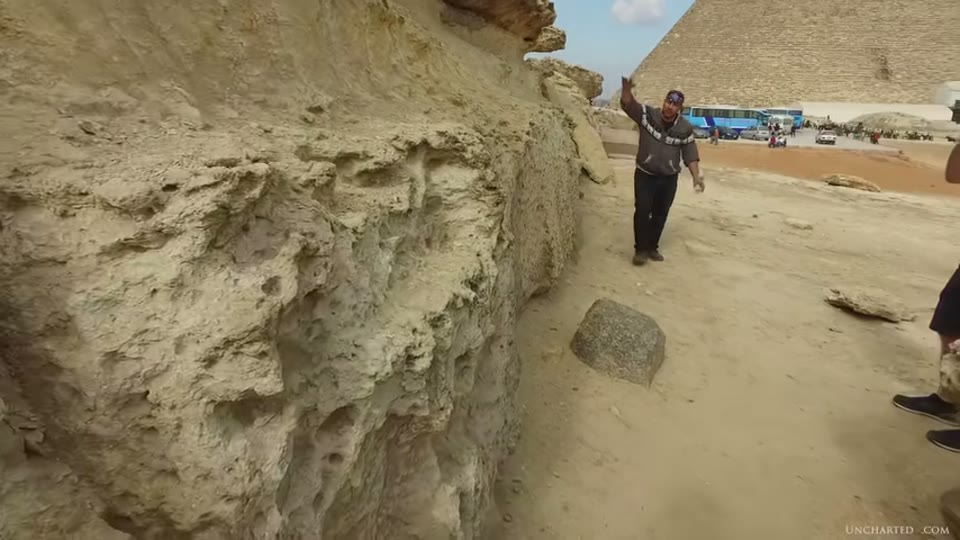
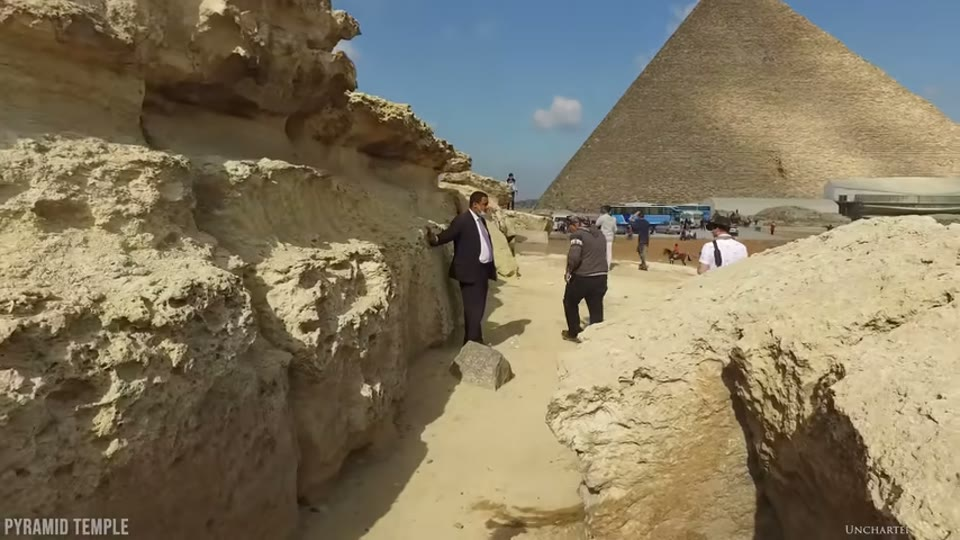
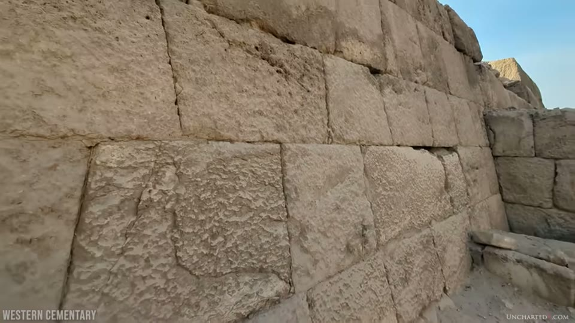
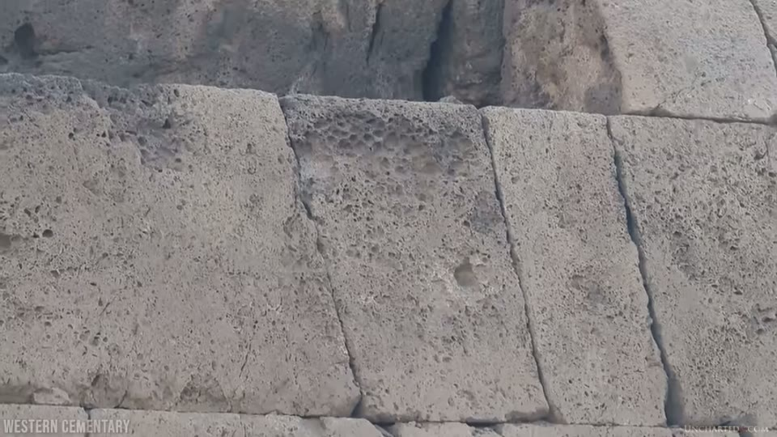
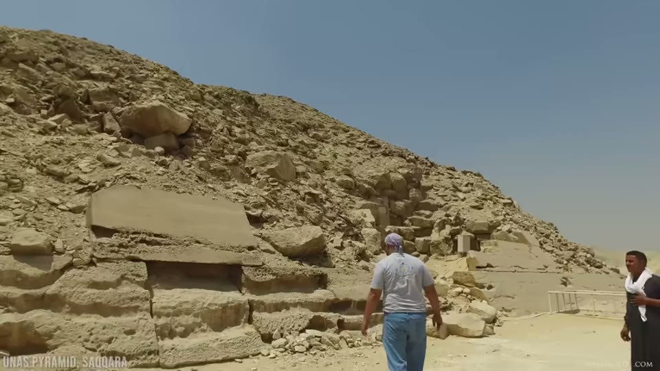
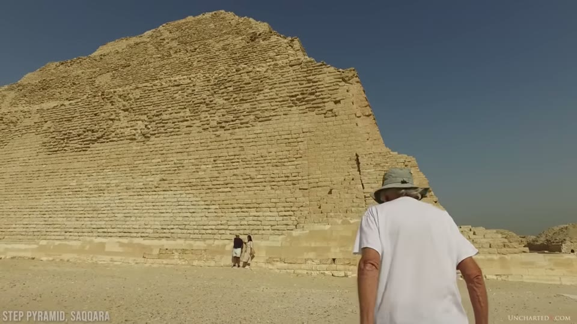

UnchartedX
How Old Are These MEGALITHS? A Study of Erosion in Ancient Egyptian Architecture
Ben · 54 min · watch on YouTube · summarised 2026-09-29
The argument is a comparison rather than a measurement. Two kinds of structure sit on the Giza plateau. One is eroding so badly it is falling down. The other is in good condition. On the accepted chronology they were built by the same people, from the same stone, at the same elevation, within a generation of each other — and the badly eroded ones are the ones that were protected by granite casing.
Ben's proposal is that the megalithic work is much older.
The restoration problem, stated first
Before any argument about erosion, a caution that applies to every photograph of Giza 06:46–09:14. A century of repair by the Ministry of Antiquities has buttressed, filled and faced these structures, and it is routinely mistaken for original work. In places blocks are visibly cemented in; in others the brickwork has been plastered over with cement, textured and painted to match the surrounding limestone.
He makes a point here against his own side of the field 07:00–07:10: the cement patching is sometimes cited as evidence for a geopolymer origin of the blocks. "In this case the geopolymer label happens to be accurate — cement is a geopolymer. But it's modern work."
His objection to the practice is that the monuments become "something of a facsimile of the original", and that some repairs — he names the basalt pavement east of the Great Pyramid — permanently seal away the manufacturing detail 09:01–09:14.

Much of what looks like ancient surface is modern repair.
What "megalithic erosion" looks like
The Pyramid (Mortuary) Temple of the middle pyramid complex, at the top of the causeway, is his main example 04:38–05:30. The internal limestone masonry has lost so much stone that you have to look closely to find where the original faces were, though the inset pattern cut to receive the granite casing is still visible in places.

Limestone in the megalithic structures has lost so much stone that the original cut faces are hard to find.
The clearest single instance 11:53–13:00: at the front of the temple a wall of limestone blocks roughly 11 m long and more than 2 m wide has toppled over, and his reading — argued on camera with Yousef Awyan — is that it fell because the blocks eroded until they could no longer bear on each other. The block that stood on top of it lies in front of it.

A wall of 11-metre blocks toppled because the stone eroded until the blocks could no longer bear on each other.
Two objections are dealt with on the spot:
- That the fallen block is evidence of a construction ramp. Rejected: the erosion line and the original width of each block can be traced, and the two are separate blocks that were stacked 13:37–13:48.
- That the structure was built from already-eroded blocks. Rejected on two grounds: the erosion pattern runs continuously across the joins from one block to the next, and blocks that were shielded by other parts of the structure still show flat faces and square corners 14:57–15:30.
A third distinction is drawn in the field 23:10–25:55: some blocks in the pyramid city are rough because they were never finished — they still carry the weathered face of the bedrock as quarried — which is a different thing from a finished face that has since eroded. Both are on site and can be told apart.
He also notes the limestone here is not soft: nummulitic limestone, which he and Awyan both call tough.
The comparison the argument rests on
The contradiction [21:39–23:10, 25:55–28:10]:
| blocks | granite casing | condition | |
|---|---|---|---|
| Pyramid Temple, middle pyramid complex | megalithic | yes, later stripped | severe erosion; collapsing |
| Western Cemetery, west of the Great Pyramid | small | never cased | "only a hint of erosive damage" |
| Tombs and mastabas south of the causeway | small | never cased | little erosion |
| Valley Temple, Sphinx Temple | megalithic | yes | severe erosion where exposed |
| Great Pyramid, remaining lower casing | megalithic | — | several feet of Tura limestone eaten away |
The Western Cemetery is the controlled case, and he states the controls explicitly: same nummulitic limestone, same elevation as the pyramid temple, attributed to Khufu — so on the orthodox timeline older than Khafre's complex — and never protected by granite.
The frames do not match the narration here. The narration says the Western Cemetery blocks show "only a hint of erosive damage". What the footage shows is blocks whose surfaces are substantially pitted and blistered — in the closest shot, honeycombed — while their geometry is intact: flat faces, square corners, straight courses, tight joints. The difference visible between the two sets of structures is a difference in loss of form, not a difference between weathered and unweathered stone.


The uncased small-block work keeps its flat faces and square corners - though its surfaces are pitted.
He extends it beyond Giza 28:01–28:27: at Saqqara the massive casing stones of the Pyramid of Unas are severely eroded, while the Step Pyramid, smaller-blocked and on the orthodox timeline much older, shows no significant erosion. The Unas footage is close enough to judge; the Step Pyramid is shown as a distant view of the whole monument, at which range surface condition cannot be read.


The same contrast at a second site.

Two kinds of structure a few hundred metres apart, in the same stone at the same elevation, in very different condition.
His conclusion from the pattern: severe erosion appears only on the megalithic work, and the megalithic work is the work that was cased. That is the two-industries claim arriving from a direction that has nothing to do with tool marks — he names it as such at 31:14–31:38.
The water question, and why he sets it aside
He takes the flooding explanation seriously before setting it aside 17:29–21:29.
For it: there is strong evidence of floods in the lower plateau; the Valley Temple is thought to have worked as a harbour during the Nile inundation; a May 2024 paper places these structures on the bank of an extinct Nile branch, the Ahramat, which was hydrologically possible only when the Sahara was a savannah. That period ran to somewhere between 5,500 and 5,000 years ago — centuries before the Fourth Dynasty date of roughly 2700 BCE. His question follows: why would Old Kingdom Egyptians build a harbour for a waterway that had already gone? He adds that Zahi Hawass drilled in front of the Sphinx Temple to about 16 m and hit red granite, which is not native to the limestone plateau, reported in his paper on the harbours of Khufu and Khafre.
Against it: the pyramid temple is at the top of the causeway, above the head of the Sphinx. Standing water there for any length of time would require an implausibly large body of water, and single flood events will not do it. So for the high ground he concludes the cause is time and ordinary processes, not floods.
The rates, and where they come from
The calculations use a stated baseline of 2 ft, 61 cm, which he justifies by the depth of loss at the fallen wall, the temple's internal blocks, the temple at Menkaure's pyramid, and the repair work 34:47–36:02. He credits Randall Carlson for the data.
| environment | source | measured rate | time for 2 ft |
|---|---|---|---|
| Intertidal limestone, wave action, Point Peron, Western Australia | Hodgkin, Rate of erosion of intertidal limestone, 1964; steel rods set 1953, casts 1956 and 1962 | 1 mm/yr at the lowest rods | 610 years |
| Sea cliffs, La Jolla, California, from dated inscriptions | Emery, 1941 | 0.5 mm/yr | 1,200 years |
| River, continuous flow, Tennessee River at Watts Bar | Fox, 1941; limestone boulders placed by the Army Corps in 1912, examined 27 years later | ½ inch per 25 years | 1,200 years |
| Tombstones, solution weathering | Goodchild, Geological Magazine, 1890 | 1 inch per 500 years | 12,000 years |
| Roof-exposed cubes, Washington DC | US Bureau of Standards via F. J. North, 1930 | 1 mm per 100 years, oolitic | 61,000 years |
| — the same, for compact crystalline limestone | as above | about a third less | ~88,000 years |
| Limestone monuments, Louisville, Kentucky | Meierding, Inscription legibility method for estimating rock weathering rates, Geomorphology 6, 1996 | 0.5 mm per 100 years | 122,000 years |
The figure he leans on hardest is the rainfall contrast: Louisville 1,209 mm/yr, Washington 1,061 mm/yr, Cairo 28 mm/yr — roughly an inch 41:54–42:10.
His summary is put on screen as a slide, and it reads: coastal wave action 610–1,220 years, rivers ~1,200 years, and normal weathering with 40+ inches of annual rainfall 12,000 to 61,000 to 122,000 years 45:28–46:11. Every one of those weathering figures comes from a place with more than forty times Egypt's rainfall.

How long published erosion rates say two feet of limestone takes.
He closes the rainfall line with B. W. Sparks, Geomorphology, 1960, on desert landforms bearing the imprint of water action that present conditions cannot supply — and Sparks's own example, the Valley of the Kings, where the valley is water-eroded but the tombs in it are not, putting the end of significant water action at least 4,000 years ago 46:57–47:20.
Then the wind-and-sand objection, and his answer to it is the comparison again 47:57–48:35: wind and sand no doubt contribute, but why is there so little of it on the uncased smaller-block Fourth Dynasty work at the same elevation?
Where he takes it
Two questions he puts to anyone holding the orthodox date 49:00–49:33: how is the erosion so severe in so short a time in so dry a climate, and why is it absent from the smaller-block structures beside it?
His answer is longer timelines for the megalithic work, with the Old Kingdom Egyptians as settlers on a site that already held these structures. He supports it with a reading of Old Kingdom inscriptions in a rock-cut tomb, given on camera by Awyan: that a four-symbol word there means settlers rather than builders, that the title is overseer of the pyramid city, and that the city's name passed into the later name Memphis 50:26–52:35. Ben flags this as interesting rather than as proof, and both men say on camera that they are not claiming it settles anything.
What you can check yourself
- The comparison itself, on foot or in photographs. The Western Cemetery and the pyramid temple are a few hundred metres apart at the same elevation. Whether the surfaces differ as described is the whole argument and it takes no instruments.
- The Unas causeway and casing against the Step Pyramid at Saqqara, the same test at a second site.
- The restoration. Once you know to look for it, cement rendering textured and painted to match limestone is identifiable in ordinary tourist photographs.
- The arithmetic. All seven conversions are internally consistent: 610 mm at 0.5 mm per century is 122,000 years; 24 inches at one inch per 500 years is 12,000; 610 mm at 1 mm per century is 61,000. The one loose figure is the compact-crystalline number, which should be about 91,000 on the stated "a third less" and is given as roughly 88,000.
- The papers. Hodgkin 1964, Goodchild 1890, Fox 1941, North 1930, Meierding 1996 and Sparks 1960 are all named with journal and date.
- The Ahramat branch paper, May 2024, is findable and says what he says it says about the waterway's date range.
What the video does not settle
- None of the cited studies is from a climate like Egypt's, and Ben says so himself. The seven rates are wave action, river flow and rainfall solution measured in humid temperate places; the rainfall contrast he puts on screen — Louisville 1,209 mm a year, Washington 1,061 mm, Cairo 28 mm — is his own figure. No measured weathering rate from Giza, or from any comparable climate, is given anywhere in the video.
- The narration and the frames describe the control case differently. "Only a hint of erosive damage" does not match the footage, which shows heavily pitted surfaces on square, sharp-edged blocks. What the images carry is that the geometry survives, not that the surfaces are unmarked.
- One of the two supporting comparisons cannot be judged from the footage. The Step Pyramid appears only as a distant view of the whole monument.
- "Same stone" is asserted, not tested. The video relies on Giza's limestone being layered into beds of very different hardness when explaining the Sphinx enclosure, then treats the Western Cemetery and the pyramid temple as the same nummulitic limestone without establishing it. No quarry, bed or analysis is given for either set of blocks.
- Burial is offered as a protection for one structure and not asked about for the compared pair. The video's own explanation for the Valley Temple's condition is that sand buried it. The burial histories of the Western Cemetery and the pyramid temple are never stated or compared.
- Block size, granite casing and proposed age vary together in every comparison offered. The megalithic structures are also the cased ones and also the ones proposed to be older. No case is shown in which those come apart.
- When the casing came off is not established. The claim is that the granite casing protected the limestone "presumably for millennia". No date, source or evidence for the stripping is given.
- The 2 ft baseline is an eyeball figure. No measurement of the depth of loss is shown, no survey, no profile. Every number in the table scales linearly from it.
- The rates are quoted at face value across a 200-fold spread. Goodchild 1890 and Meierding 1996 differ by a factor of ten for what is described as the same kind of process, and the video reports both without preferring one or asking why they disagree.
- Nothing dates anything directly. What is shown is a difference in erosion between two kinds of structure. The ages come from the rate table, and no rate measured at Giza — or at any Egyptian site — appears in it.
- The inscription reading is presented as suggestive and is unsourced. A four-symbol word rendered as "settlers" carries the closing minutes; no publication, no transliteration and no dissenting reading is given. Both men say on camera that it settles nothing.
Erosion as a dating method, argued against
Two videos on another channel take the same method apart, and both are about the Sphinx rather than the pyramid temple.
Great Sphinx Water Erosion Mystery: A Buried Secret Revealed argues that the Sphinx spent most of the last 4,000 years under sand, so on the conventional date it was exposed for at most 500 years — and then takes apart the comparison usually used to show the Sphinx is older than the pyramids.
The Sphinx Water Erosion Mystery Explained accepts the water erosion on the enclosure and rejects the conclusion drawn from it, reading the basin as a stormwater catch cut in a wetter period.
Where they meet and where they do not. All three accept that the erosion is real and that it needs explaining. The disagreement is about what erosion can be made to date. Neither of those videos addresses the comparison this one is built on — megalithic against small-block work at the same elevation — and this one does not address the burial history that both of theirs turn on.
Names heard rather than confirmed
No caption track exists for this channel. This 2024 transcript is a clean one, but the names are still machine reconstructions. Corrected from context: Yousef Awyan, Khafre and Khufu, Menkaure, Saqqara, Zahi Hawass, Randall Carlson, the Ahramat branch, Hodgkin, Emery, Fox, Goodchild, Meierding, F. J. North, B. W. Sparks, Point Peron, La Jolla, Watts Bar, and nummulitic limestone. The figure for compact crystalline limestone arrives as "880,000 years" and is recorded here as approximately 88,000, which is what the stated rate produces; it has not been confirmed from the screen.